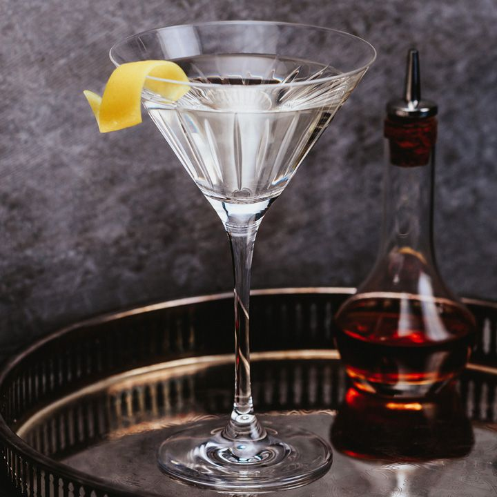

James Bond Martini

Description
This is a recipe that combines ingredients for the classic James Bond Martini.
A few of these and you might start believing you are a secret agent yourself!
Ingredients
- 3 ounces gin
- 1 ounce vodka
- 1/2 ounce Lillet Blanc, or dry vermouth
- Lemon peel, for garnish
Steps
- Gather the ingredients.
- In a cocktail shaker, combine gin, vodka, and Lillet Blanc or dry vermouth.
- Shake well and strain into a chilled cocktail glass.
- Garnish with a large piece of lemon peel. Serve and enjoy.